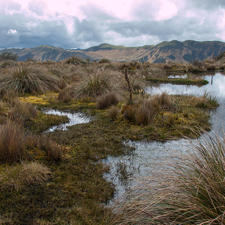

 Thermal adaptation in tropical mountains
I am focused on analyze the spatial and temporal variation of the thermal physiological tolerances of organisms and their implication upon a climate change scenario and other factors of anthropogenic origin.